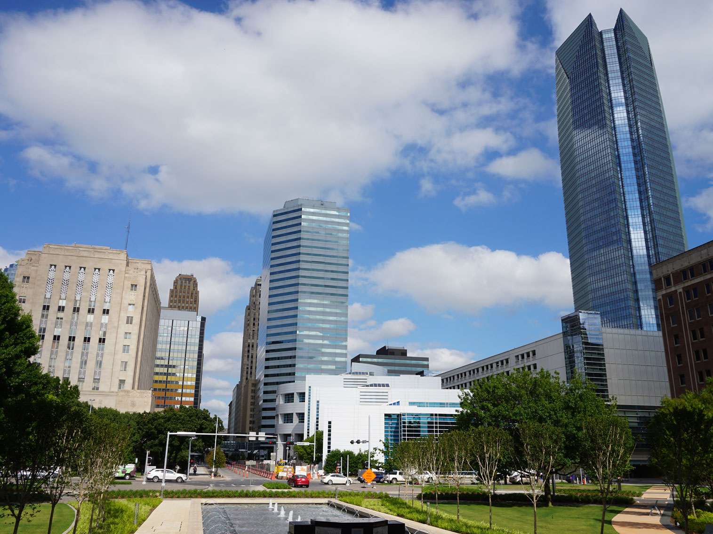
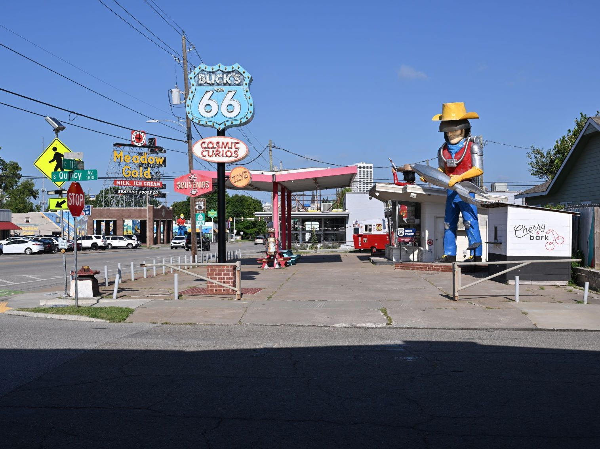
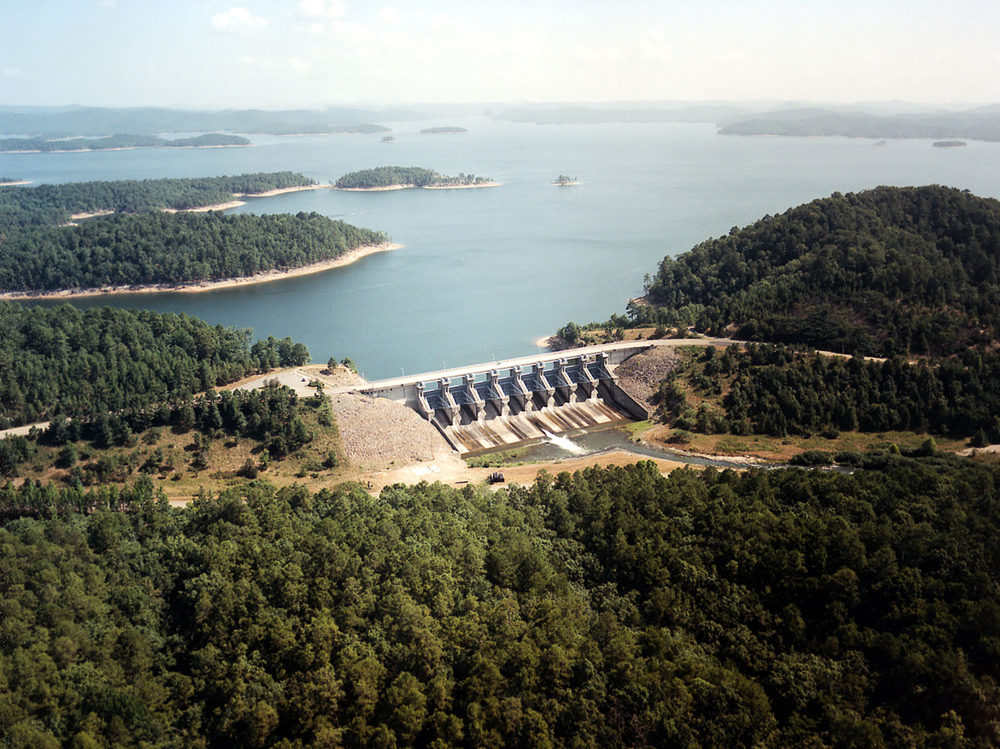

Oklahoma Travel Guide
Explore Native American heritage sites, roam the Great Plains, and discover Oklahoma City's museums amid rolling prairies and eastern forests.
Top Locations


Places to See in Oklahoma

Michael Barera, CC BY-SA 4.0, via Wikimedia Commons; Image Size Adjusted
.jpg){kind=link}
Oklahoma City
Capital and largest city of Oklahoma is a major urban center offering a diverse blend of cultural attractions, entertainment venues, and civic institutions.

Michael Barera, CC BY-SA 4.0, via Wikimedia Commons; Image Size Adjusted
Tulsa
Riverfront hub defined by an Art Deco skyline, world-class museums, an acclaimed urban park, and a storied legacy of oil booms and American music.

Travertine Creek Swimming Area, Chickasaw NRA
jonathan c. wheeler, CC BY-SA 3.0, via Wikimedia Commons; Image Size Adjusted

Travertine Creek Swimming Area, Chickasaw NRA
jonathan c. wheeler, CC BY-SA 3.0, via Wikimedia Commons; Image Size Adjusted

Broken Bow Spillway, Beavers Bend Resort ParkU.S. Army Corps of Engineers, photographer not specified or unknown, Public domain, via Wikimedia Commons; Image Size Adjusted

Oklahoma State Parks

Turner Falls ParkJacob.jose, CC BY-SA 4.0, via Wikimedia Commons; Image Size Adjusted

Landmarks and Landscapes
- Chickasaw Cultural Center★
- Fred Jones Jr. Museum of Art★
- Heavener Runestone Park★
- Joseph H. Williams Tallgrass Prairie Preserve★
- Mabee Gerrer Museum of Art★
- Museum of the Great Plains★
- Red Rock Canyon Campground and Adventure Park★
- Sam Noble Oklahoma Museum of Natural History★
- Stafford Air and Space Museum★
- Tucker Tower Nature Center★
- Turner Falls★
- US Army Artillery Museum★
- Woolaroc Museum and Wildlife Preserve★
Overview
Oklahoma, "The Sooner State," sits where the Great Plains meet the Ozark and Ouachita highlands, and people come for its Route 66 heritage, Native American history, Western culture, and uncrowded outdoor scenery. Oklahoma City is the capital and largest city, and Tulsa is its second major urban center.
Visitors come to drive the Mother Road, tour museums and memorials in Oklahoma City and Tulsa, see bison and longhorns in the Wichita Mountains, and learn about the Native nations that call the state home. Others come to hike, swim, and camp at state parks such as Turner Falls and Beavers Bend, climb the granite peaks of southwestern Oklahoma, and visit cowboy and oil-boom landmarks across the plains.
Geography
Oklahoma lies between the Great Plains and the Ozark Plateau and slopes from the high plains of the west to the low, forested hills of the southeast. The state's highest point is Black Mesa, at 4,973 feet, in the far northwestern Panhandle near Black Mesa State Park, and its lowest point is about 289 feet above sea level near Idabel. Four mountain ranges rise from the plains: the Ozarks and Ouachitas in the east, and the Arbuckle and Wichita Mountains in the south and southwest, with the Ozarks and Ouachitas the only major highlands between the Rockies and the Appalachians. Mesas such as the Gloss Mountains and the semi-arid high plains lie to the northwest, tallgrass prairie covers the north-central Osage region, and the Cross Timbers form a transition zone of oak woodland and savanna across the center.
History
Native peoples lived in the region for thousands of years before European contact, and Spanish and French explorers passed through in the 1500s and 1700s. After the Louisiana Purchase in 1803, the U.S. government forced the Cherokee, Chickasaw, Choctaw, Creek, and Seminole nations to relocate to Indian Territory along the Trail of Tears, and more than 30 tribes now have a presence in the state. Cattle drives crossed the area after the Civil War, and the Land Run of April 22, 1889, opened the Unassigned Lands to settlement, giving the state its "Sooner" nickname. Oklahoma Territory and Indian Territory were merged to form the 46th state on November 16, 1907. The oil boom, the Dust Bowl of the 1930s, and the growth of aviation, energy, and telecommunications have all shaped its history.
Oklahoma City
Oklahoma City was born in the Land Run of 1889, when thousands of settlers staked claims in a single afternoon. Today its best-known sights include the Oklahoma City National Memorial, honoring the victims of the 1995 bombing, and the National Cowboy & Western Heritage Museum. The First Americans Museum tells the story of the state's tribal nations, while Bricktown, Scissortail Park, and the Boathouse District anchor downtown dining and recreation. Stockyards City keeps the cattle-town tradition alive, and the city is home to the NBA's Oklahoma City Thunder.
Tulsa
Tulsa grew into the "Oil Capital of the World" in the early 1900s, and its oil wealth left behind one of the nation's finest collections of Art Deco architecture, explored at Decopolis. The city's top attractions include Gathering Place, a large riverfront park, the Philbrook Museum of Art, the Woody Guthrie Center, and the Oklahoma Aquarium. The Greenwood Cultural Center preserves the history of the Greenwood District, once known as Black Wall Street, and the 1921 Tulsa Race Massacre. The Golden Driller and the Blue Dome District are well-loved local landmarks.
Route 66 in Oklahoma
Oklahoma has more drivable miles of historic Route 66 than any other state, about 400 miles from Quapaw in the northeast to Texola on the Texas line. Tulsa's Cyrus Avery, known as the "Father of Route 66," championed the route's creation, and the Cyrus Avery Centennial Plaza honors him. Roadside icons along the way include the Blue Whale of Catoosa, Ed Galloway's Totem Pole Park, the Rock Cafe in Stroud, the Arcadia Round Barn, POPS with its giant soda bottle, and Lucille's Historic Highway Gas Station. Museums such as the Oklahoma Route 66 Museum in Clinton and the National Route 66 & Transportation Museum in Elk City trace the highway's history.
National Protected Areas
Oklahoma has no national park, but it does protect a range of federal sites. The Chickasaw National Recreation Area near Sulphur is known for its springs, swimming holes, and campgrounds. The Wichita Mountains Wildlife Refuge, founded in 1901, shelters bison, elk, and longhorn cattle beneath granite peaks such as Mount Scott. The Washita Battlefield National Historic Site preserves the site of an 1868 attack on a Cheyenne village, and Fort Sill is a National Historic Landmark. The Salt Plains National Wildlife Refuge is a major stopover for migratory birds, and the Tallgrass Prairie Preserve, the largest protected tallgrass prairie in the world, is home to a herd of bison.
State Parks and Historic Sites
Oklahoma has more than 50 state parks. Turner Falls, with its 77-foot waterfall, and Beavers Bend State Park in the Ouachita Mountains are among the most popular for swimming, fishing, and camping. Natural Falls State Park offers a 77-foot cascade in the Ozark foothills, and Alabaster Caverns holds one of the largest gypsum caves open to the public in the world. Quartz Mountain and Little Sahara offer granite scenery and sand dunes. Historic sites include the Chickasaw Cultural Center, Fort Gibson Historic Site, Sequoyah's Cabin, and Woolaroc.
Seasons and When to Visit
Spring and fall are the best times to visit, with mild temperatures, wildflowers in April and May, and colorful foliage in the eastern hills in October and November. Spring is also Oklahoma's severe-weather season, with thunderstorms and tornadoes most likely from April through June, so travelers should monitor forecasts. Summer is hot and humid, which makes it the season for swimming, boating, and lake recreation at places such as Turner Falls and Beavers Bend. Winter is generally mild in the south but can bring occasional ice and snow, and it is a quiet time for museums, indoor attractions, and bird and eagle watching at the state's lakes.
This article uses material from the Wikipedia article "Oklahoma", which is released under the Creative Commons Attribution-Share-Alike License 3.0. Additional information was drawn from the National Park Service, Oklahoma Tourism and Recreation Department, and TravelOK.